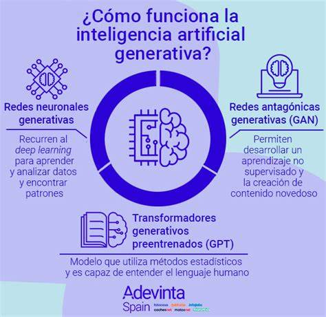

Principales aplicaciones de la inteligencia artificial
Hoy en día existen numerosas aplicaciones prácticas de sistemas de IA. Algunos de los ejemplos más comunes son:
- Reconocimiento del habla
También denominado reconocimiento automático de voz (ASR), reconocimiento de voz por computadora o conversión de voz a texto, es una funcionalidad que utiliza el procesamiento de lenguaje natural (NLP) para procesar el habla humana y trasladarla a un formato escrito. Muchos dispositivos móviles incorporan el reconocimiento del habla en sus sistemas para realizar búsquedas por voz, por ejemplo, Siri, o proporcionar más accesibilidad en torno a los mensajes de texto.
- Servicio al cliente
Los agentes virtuales en línea están reemplazando a los agentes humanos en la experiencia del cliente. Responden a preguntas frecuentes de diferentes temas (como el envío) o proporcionan asesoramiento personalizado, realizan venta cruzada de productos o sugieren tallas para los usuarios, cambiado la forma de interactuar con los clientes en los sitios web y las plataformas de redes sociales.
Algunos ejemplos incluyen bots de mensajería en sitios de comercio electrónico con agentes virtuales, aplicaciones de mensajería (como Slack y Facebook Messenger) y tareas generalmente realizadas por asistentes virtuales y asistentes de voz.
- Visión artificial
Esta tecnología de IA permite que las computadoras y los sistemas obtengan información significativa de imágenes digitales, videos y otras entradas visuales, y que actúen con base en ellas.
Esta capacidad de proporcionar recomendaciones lo distingue de las tareas de reconocimiento de imágenes. Impulsada por redes neuronales convolucionales, la visión artificial se puede aplicar en el etiquetado de fotos en redes sociales, las imágenes radiológicas en la salud y los vehículos autónomos en la industria automotriz.
- Motores de recomendaciones
Utilizando datos del comportamiento pasado de los consumidores, los algoritmos de IA pueden ayudar a descubrir tendencias de datos para desarrollar estrategias de venta cruzada más eficaces.
Esto se usa para que los minoristas en línea puedan hacer recomendaciones adicionales relevantes a los clientes durante el proceso de compra.
Historia de la inteligencia artificial: fechas y nombres clave
La idea de "una máquina que piensa" se remonta a la antigua Grecia. Pero, desde la aparición de la computación electrónica (y en relación con algunos de los temas tratados en este artículo), ha habido acontecimientos importantes e hitos en la evolución de la inteligencia artificial:
- 1950
Alan Turing publica Computing Machinery and Intelligence. En el artículo, Turing, famoso por haber descifrado el código ENIGMA de los nazis durante la Segunda Guerra Mundial, propone responder a la pregunta "¿pueden pensar las máquinas?". e introduce la Prueba de Turing para determinar si una computadora puede demostrar la misma inteligencia (o los resultados de la misma inteligencia) que un humano. El valor de la prueba de Turing ha sido objeto de debate desde entonces
- 1956
John McCarthy acuña el término "inteligencia artificial" en la primera conferencia de IA en el Dartmouth College. (Posteriormente, McCarthy inventaría el lenguaje Lisp). Ese mismo año, Allen Newell, JC Shaw y Herbert Simon crearon Logic Theorist, el primer programa de software de inteligencia artificial que funcionó
- 1997
El sistema Deep Blue de IBM vence al campeón mundial de ajedrez Garry Kasparov, en una partida de ajedrez (y revancha).
- 2015
La supercomputadora Minwa de Baidu usa un tipo especial de red neuronal profunda, llamada red neuronal convolucional, para identificar y categorizar imágenes con una mayor precisión que el promedio humano.
- 2016
El programa AlphaGo de DeepMind, impulsado por una red neuronal profunda, vence a Lee Sodol, el campeón mundial de Go, en un partido de cinco juegos. La victoria es significativa dado el gran número de movimientos posibles a medida que el juego progresa (¡más de 14,5 billones después de solamente cuatro movimientos!). Más tarde, Google compró DeepMind por USD 400 millones.
El auge de los modelos generativos
La IA generativa se refiere a modelos de aprendizaje profundo que pueden tomar datos sin procesar; digamos, toda Wikipedia o los trabajos recopilados de Rembrandt, y “aprender” a generar resultados estadísticamente probables cuando se le solicite. En un alto nivel, los modelos generativos codifican una representación
simplificada de sus datos de capacitación y los extraen para crear un nuevo trabajo similar, pero no idéntico, a los datos originales.Los modelos generativos se han utilizado durante años en estadísticas para analizar datos numéricos. Sin embargo, el auge del aprendizaje profundo permitió ampliarlos a imágenes, voz y otros tipos de datos complejos. Entre la primera clase de modelos que lograron esta hazaña cruzada se encuentran los autocodificadores variacionales, o VAE, introducidos en el 2013. Los VAE fueron los primeros modelos de aprendizaje profundo que se usaban ampliamente para generar imágenes y discursos realistas.
VAE's
“Los VAEs abrieron las puertas al modelado generativo profundo haciendo que los modelos sean más fáciles de
escalar”, dijo Akash Srivastava, experto en IA generativa del MIT-IBM watsonx AI Lab.
Los VAEs abrieron las puertas al modelado generativo profundo haciendo que los modelos sean más fáciles de
escalar”, dijo Akash Srivastava, experto en IA generativa del MIT-IBM watsonx AI Lab.
“Gran parte de lo que hoy pensamos como IA generativa comenzó aquí”..
GPT
Los primeros ejemplos de modelos, como GPT-3, BERT o DALL-E 2, han demostrado lo que es posible. El futuro son modelos capacitados en un amplio conjunto de datos no etiquetados que se pueden utilizar para diferentes tareas, con un ajuste mínimo de precisión. Los sistemas que ejecutan tareas específicas en un solo dominio están dando paso a una IA amplia que aprende de manera más general y funciona en todos los dominios y problemas. Los modelos fundacionales, entrenados en grandes conjuntos de datos sin etiquetar y ajustados para una variedad de aplicaciones, están impulsando este cambio.
IA generativa
Cuando se trata de IA generativa, se predice que el modelo fundacional acelerarán drásticamente
la adopción de IA en la empresa. La reducción de los requisitos de etiquetado hará que sea mucho
más fácil para las empresas sumergirse en ella, y la automatización altamente precisa y eficiente impulsada por la IA que permiten significará que muchas más empresas podrán desplegar la IA en una gama más amplia de situaciones de misión crítica. Para IBM, la esperanza es que el poder del modelo fundacional pueda eventualmente llevarse a todas las empresas en un entorno de nube híbrida sin fricciones.
